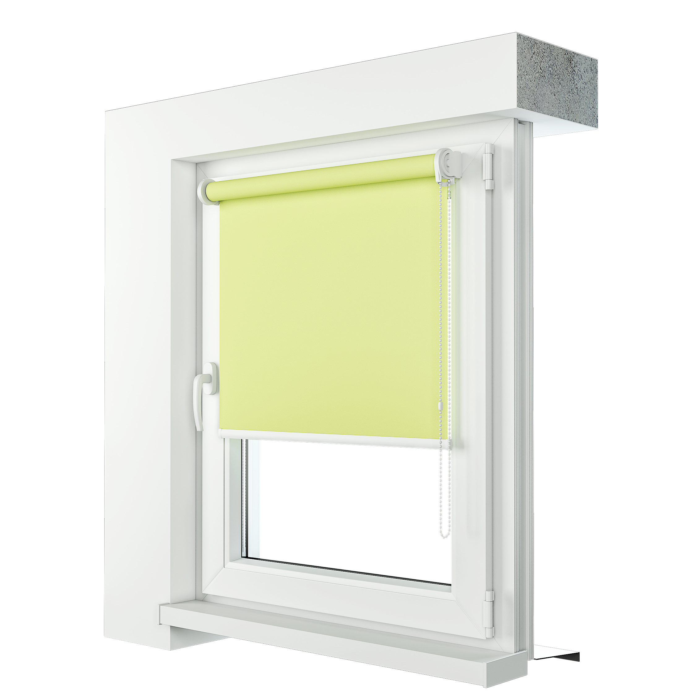
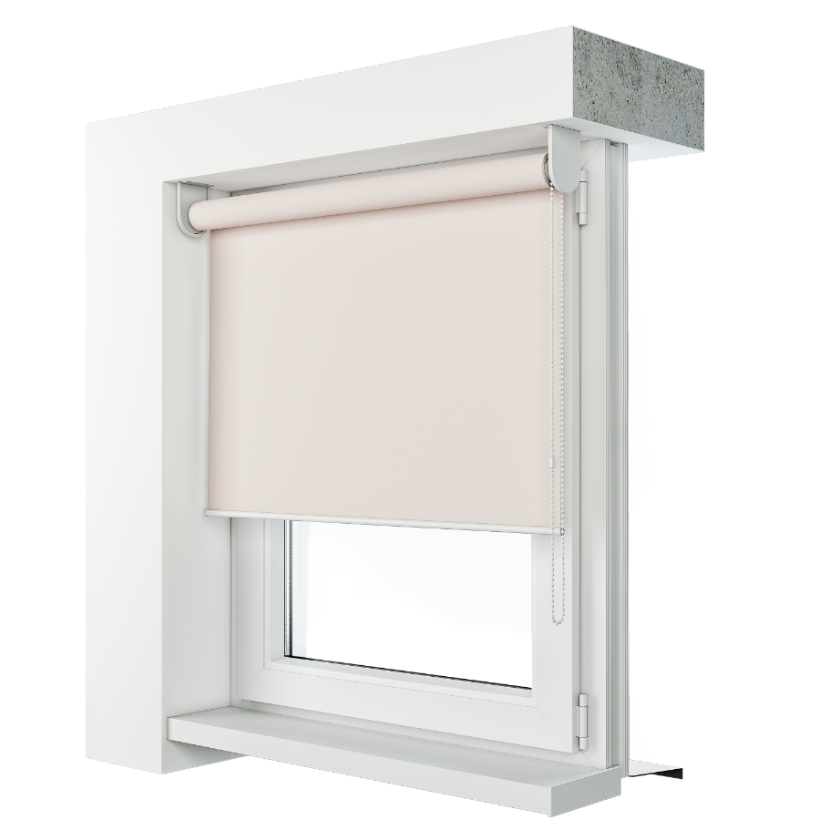
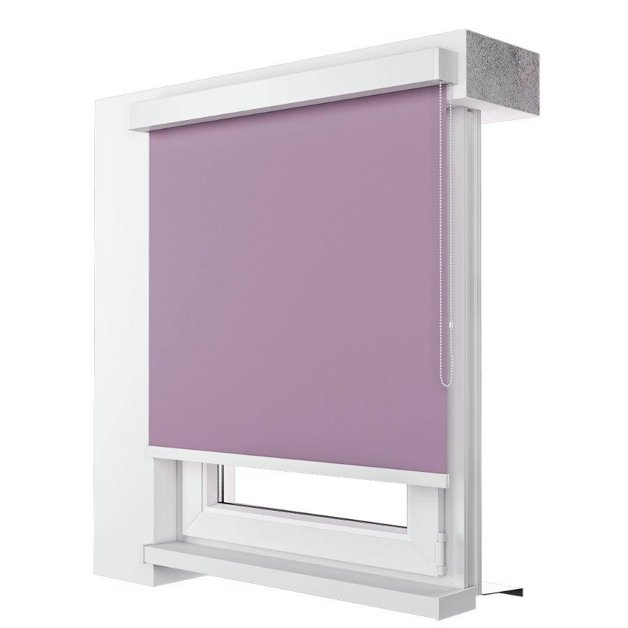
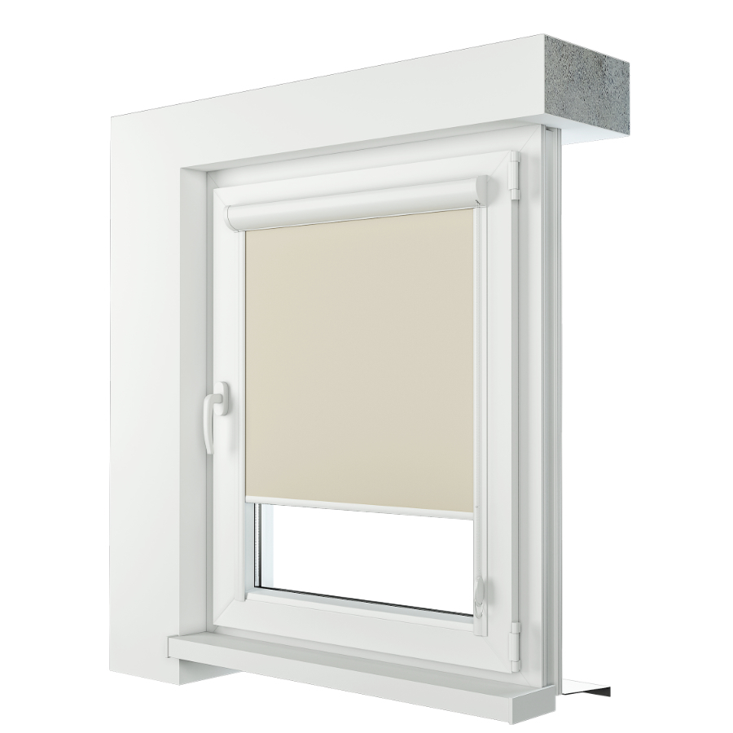
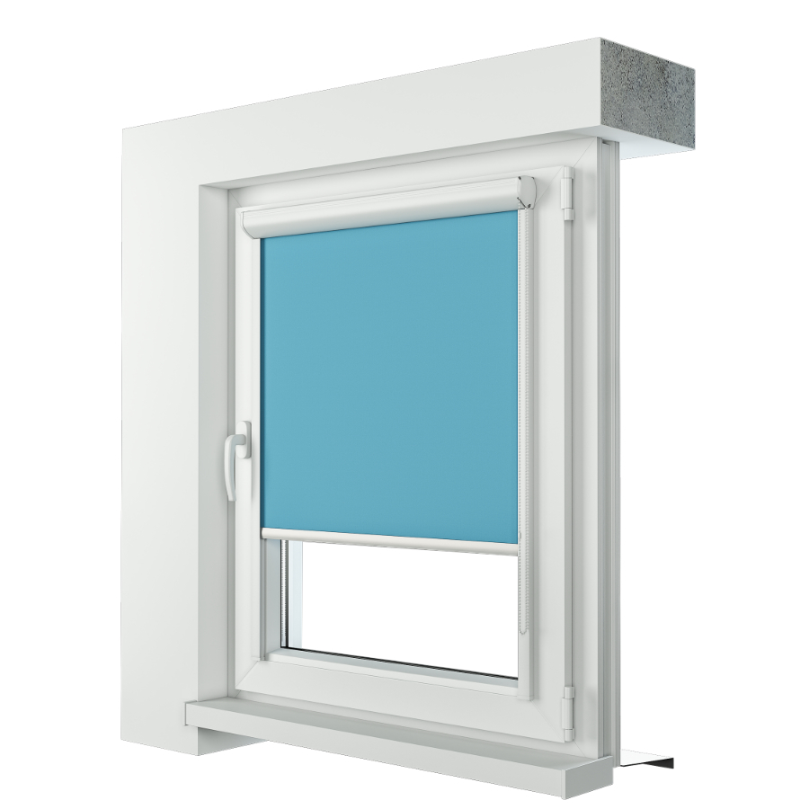
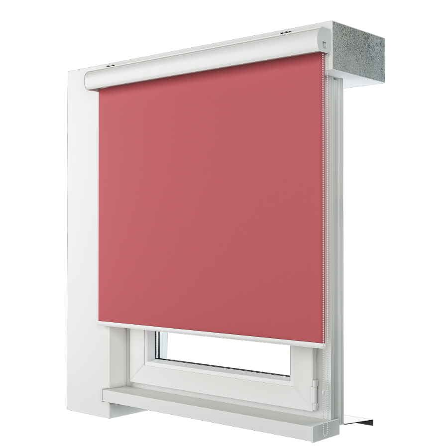
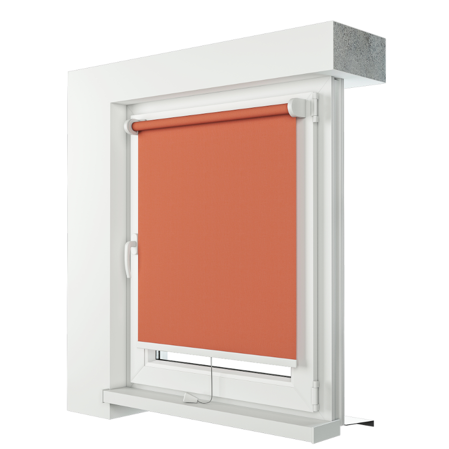
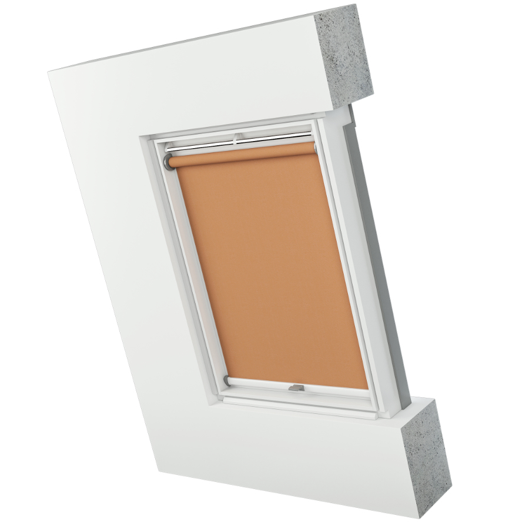

Modely, které nabízím

JAZZ 17 / 32 / EXPERT
Volně visící, bez krytu návinu, ovládání řetízkem. Montáž na křídlo okna, do ostění nebo na zeď. Max. šířka 2 500 mm.

JAZZ 45
Hřídel průměru 45 mm, ideální pro velká okna. Montáž na zeď nebo strop. Max. šířka 3 000 mm.

SONATA / SONATA XL
S krytem návinu, hliníkový box, možnost vodících lišt. Montáž na strop nebo zeď. Max. šířka 3 000 mm.

COLLETE PLUS / XL
S krytem a krycími lištami. Montáž na křídlo okna, látka zajištěna krycími lištami. Max. šířka 1 500 mm.

OPTIMA / OPTIMA MINI
S krytem a vodícími lištami. Montáž na rám okna. Max. šířka 2 000 mm.

OPUS
S krytem návinu, volně visící, bez krycích lišt. Montáž na zeď nebo strop. Max. šířka 2 500 mm.

STREAM PLUS
Pružinový pohon navíjení. Montáž na křídlo okna nebo zeď. Max. šířka 2 000 mm.

STREAM S
Určeno výhradně pro střešní okna. Pružinový pohon. Max. šířka 1 200 mm.

LEGEND
Roletka pro střešní okna s pružinovým pohonem. Montáž do křídla okna bez vrtání. Max. šířka 1 200 mm.
Barvy, vzorník látek a technické parametry všech modelů najdete na hlavní stránce nebo vám je ukážu při zaměření.